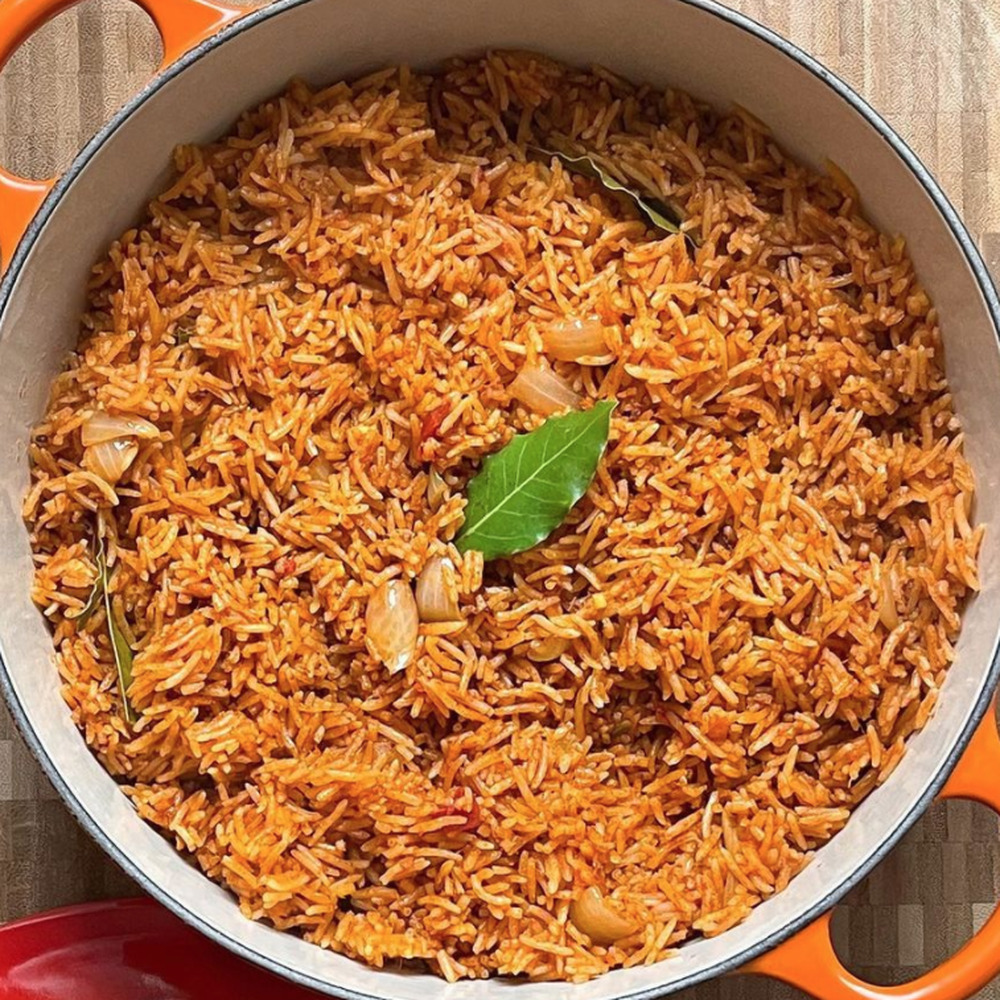

Jollof Rice

Description:The traditional Nigerian Jollof dish
Because Jollof Rice is Bae, and much loved South of the Sahara and along the coast of West Africa.
Spiced and stewed in a flavorful tomato broth, it is everything from "everyday" to celebration.
The classic version is cooked with long-grain rice (Uncle Ben's/Carolina's)
and seasoned with Nigerian-style curry powder and dried thyme. Served with fried, ripe plantains which we call dodo and coleslaw, it is everything.
Learning to make Jollof was a rite of passage for me and I've gone through so many iterations each
time trying to streamline the process while delivering the most flavour.
Ingredients used:
- 3 cups of washed long grain white rice
- 1 cans of plum tomatoes
- 1 medium onion -chopped
- 2 red bell peppers
- One scotch bonnet
- spices(3 teaspoons salt,seasoning and thyme)
- Groundnut oil/butter
steps for cooking
- In a blender, combine tomatoes, red poblano (or bell) peppers, chopped onions, and Scotch bonnets with 2 cups of stock, blend till smooth,
about a minute or two. You should have roughly 6 cups of blended mix. Pour into a large pot/ pan and bring to the boil then turn down and let simmer,
-
- In a large pan, heat oil and add the sliced onions. Season with a pinch of salt, stir-fry for 2 to 3 minutes, then add the bay leaves,'
curry powder and dried thyme and a pinch of black pepper for 3 - 4 minutes on medium heat. Then add the tomato paste - stir for another 2 minutes.
Add the reduced tomato-pepper-Scotch bonnet mixture, stir, and set on medium heat for 10 to 12 minutes till reduced by half, with the lid on. This is the stew that will define the pot.
- Add 4 cups of the stock to the cooked tomato sauce and bring it to boil for 1 - 2 minutes.
- Add the rinsed rice and butter, stir, cover with a double piece of foil/baking or parchment paper and put a lid on the pan—this will seal in the steam and lock in the flavour. Turn down the heat and cook on low for 30 minutes.
- Stir rice—taste and adjust as required.
If you like, add sliced onions, fresh tomatoes and the 2nd teaspoon of butter and stir through.
- Serve and enjoy.